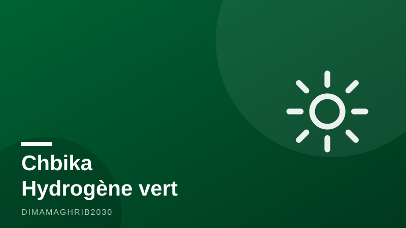

Hydrogène vert au Maroc : le projet Chbika passe du PowerPoint au pipelineMorocco's Green Hydrogen Gets Real: Chbika Project Locks In Land and Targets Europe

Pendant des années, l'hydrogène vert au Maroc a surtout existé dans les présentations d'investisseurs et les discours ministériels. Ce mois de juillet 2026 marque un basculement : le projet Chbika de TotalEnergies, mené aux côtés de Copenhagen Infrastructure Partners et d'A.P. Møller Capital, a sécurisé son assise foncière dans la région de Guelmim-Oued Noun, selon BioEnergy Times, et affiche désormais une cible commerciale claire — le marché européen de l'ammoniac vert.
Selon l'Agence Ecofin, le consortium vise une production d'environ 200 000 tonnes par an d'ammoniac vert destinée à l'Europe. C'est la première fois qu'un projet issu de l'« Offre Maroc » hydrogène, le cadre lancé par Rabat pour attirer les développeurs internationaux, atteint ce stade de positionnement commercial. Autrement dit : Chbika n'est plus une promesse, c'est une offre sur le marché.
Un gigawatt de renouvelables et de l'eau de mer dessalée
La mécanique industrielle du projet est désormais documentée. D'après les publications spécialisées PVknowhow et Fuel Cells Works, Chbika sera alimenté par environ 1 GW de capacités renouvelables — éolien et solaire, dont la région saharienne ne manque pas — tandis que l'électrolyse sera nourrie par de l'eau de mer dessalée, une réponse directe au stress hydrique qui pèse sur le royaume. L'hydrogène produit sera converti en ammoniac, plus facile à transporter par voie maritime vers les ports européens.
Le choix de l'ammoniac vert Maroc-Europe comme vecteur n'a rien d'anodin. L'Union européenne, engagée dans la décarbonation de ses engrais, de sa chimie et bientôt de son transport maritime, cherche des fournisseurs fiables à ses portes. Avec ses 3 000 kilomètres de côtes atlantiques, son soleil, son vent et sa proximité logistique, le Maroc se positionne ouvertement comme le fournisseur de décarbonation de l'Europe — un rôle que Chbika vient concrétiser.
380 milliards de dirhams pour accompagner la transition
Le projet ne surgit pas dans le vide. Selon Finances News Hebdo, le Maroc a programmé 380 milliards de dirhams d'investissements publics pour 2026, massivement orientés vers la transition énergétique et les infrastructures — ports, dessalement, réseaux électriques. Pour les fonds internationaux qui cherchent où investir dans les énergies renouvelables au Maroc, ce couplage entre capitaux privés étrangers et investissement public structurant constitue précisément le signal de crédibilité attendu.
L'attelage réuni autour de Chbika illustre cette attractivité : une supermajor de l'énergie (TotalEnergies), le premier gestionnaire mondial de fonds dédiés aux renouvelables (Copenhagen Infrastructure Partners) et un investisseur d'infrastructures adossé au groupe Maersk (A.P. Møller Capital). Rarement un projet marocain aura aligné un tel plateau financier dès la phase de développement.
Une plateforme qui regarde aussi vers le Sud
L'ambition marocaine ne s'arrête pas au marché européen. Selon AfriMag, le forum d'affaires Mali-Maroc tenu à Bamako en juillet 2026 a mis en avant le royaume comme plateforme industrielle, logistique et financière pour le Sahel. La logique est cohérente : les mêmes infrastructures — ports atlantiques, énergie compétitive, banques panafricaines — qui font du Maroc un fournisseur de l'Europe en font un hub pour l'Afrique de l'Ouest.
Reste l'épreuve décisive : la décision finale d'investissement, les contrats d'achat à long terme avec des clients européens et la première molécule exportée. Mais avec un foncier sécurisé, un consortium de premier rang et un marché cible assumé, le projet Chbika a fait ce qu'aucun autre projet d'hydrogène vert marocain n'avait encore réussi : sortir du PowerPoint pour entrer dans le pipeline.
For years, Morocco green hydrogen ambitions lived mostly in investor decks and ministerial speeches. July 2026 changed that. The Chbika project in Morocco — a venture bringing together TotalEnergies, Copenhagen Infrastructure Partners and A.P. Møller Capital — has secured its land rights in the southern Guelmim-Oued Noun region, according to BioEnergy Times, and is now explicitly courting the European green ammonia market.
According to Ecofin Agency, the consortium is targeting roughly 200,000 tonnes per year of green ammonia for export to Europe. That makes Chbika the first project under Morocco's "Offre Maroc" hydrogen framework — the national scheme designed to attract international developers with land, infrastructure and streamlined permitting — to reach genuine commercial positioning. In plain terms: this is no longer a concept. It is a product looking for buyers.
One gigawatt of renewables, fed by the Atlantic
The industrial architecture is now on the record. According to trade publications PVknowhow and Fuel Cells Works, Chbika will be powered by around 1 GW of renewable capacity — drawing on the Saharan region's world-class wind and solar resources — with electrolysis fed by desalinated seawater, a deliberate answer to the water stress weighing on the kingdom. The hydrogen will be converted into ammonia, a molecule far easier to ship to European ports than hydrogen itself.
The choice of ammonia is strategic. Europe needs low-carbon feedstock for fertilizers, chemicals and, increasingly, maritime fuel — and it wants reliable suppliers close to home. With 3,000 kilometres of Atlantic coastline, abundant sun and wind, and a short shipping lane to Rotterdam and Antwerp, Morocco is making an open bid to become Europe's decarbonisation supplier. Chbika is the first tangible expression of that bid.
A 380 billion-dirham backdrop of public investment
The project is not landing in a vacuum. According to Moroccan financial weekly FNH, the kingdom has programmed 380 billion dirhams of public investment for 2026, heavily weighted toward the energy transition and infrastructure — ports, desalination plants and grid upgrades. For funds weighing whether to invest in Morocco renewable energy, that pairing of private foreign capital with structural public spending is exactly the credibility signal markets look for in any Morocco energy transition investment.
The consortium itself tells a story about confidence. An energy supermajor (TotalEnergies), the world's largest dedicated renewables fund manager (Copenhagen Infrastructure Partners) and an infrastructure investor backed by the Maersk family's holding (A.P. Møller Capital) rarely align this early on a single African project. Their presence suggests Chbika is being built to bankable, export-grade standards from day one.
A platform facing north — and south
Morocco's positioning is not only about Europe. According to AfriMag, the Mali–Morocco business forum held in Bamako in July 2026 showcased the kingdom as an industrial, logistics and financial platform for the Sahel. The logic is consistent: the same Atlantic ports, competitive energy and pan-African banking networks that make Morocco a supplier to Europe also make it a gateway for West Africa's landlocked economies.
The hard part still lies ahead — a final investment decision, long-term offtake contracts with European buyers, and the first exported molecule. But in the story of Morocco green hydrogen in 2026, Chbika has already done what no rival project managed: it has moved from PowerPoint to pipeline, with land under its feet and a market in its sights.